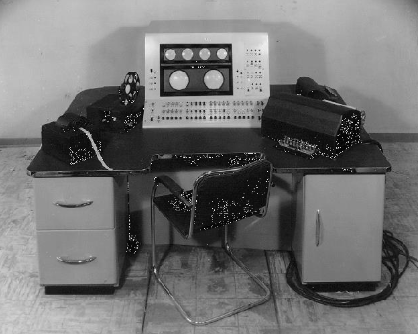

Sa vie :

Tim Berners-Lee est un informaticien qui a révolutionné le monde par son invention. Il est né le 8 juin 1955 à Londres en Angleterre. Dès le plus jeune âge, Tim s’intéresse à l’informatique du simple fait que ses parents sont les inventeurs du Ferranti Mark I étant le premier ordinateur commercialisé. Il a commencé dans des petites écoles comme Sheen Mount Primary School ou même Emanuel School avant de finir dans une grande école du nom de Queen’s college où il décroche un diplôme de physique avec la mention très bien. Sa carrière commence à Plessey où il restera deux ans et travaillera sur des systèmes de transaction distribués, des relais de messages et la technologie des codes barres.
En 1978, il quitte Plessey et travaille sur un logiciel pour les imprimantes intelligentes et un système d’exploitation multitâches à D.G. Nash Ltd. Après ce travail, il devient consultant indépendant et travaille avec de nombreuses entreprises comme Cern où il travaillera de juin à décembre 1980 en tant qu’ingénieur logiciel consultant.
